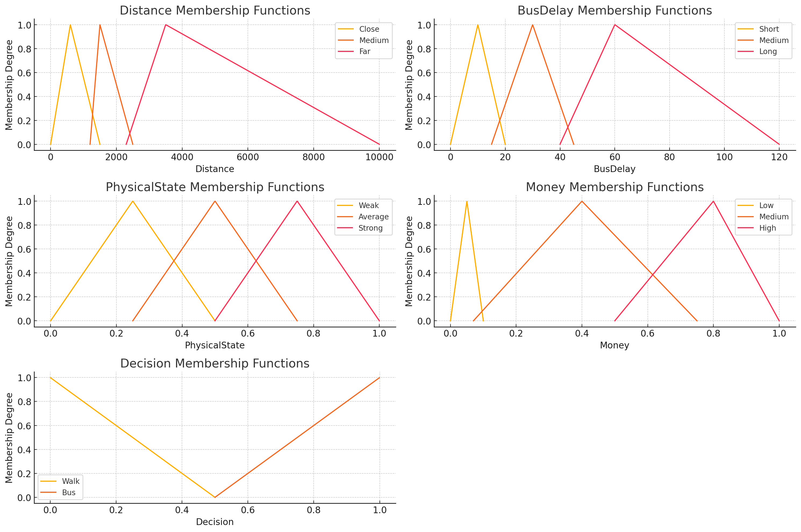

Abstract
This paper presents Bifrost, a simulation project aimed at optimizing public transportation in a city using a multi-agent approach. Bifrost simulates agents representing travelers, modeled with the Belief-Desire-Intention (BDI) architecture, and utilizes Particle Swarm Optimization (PSO) to minimize Conditional Value at Risk at the 90th percentile (CVaR90) of travel times. The simulation is designed to assess and improve the efficiency of public transport systems by modeling real-world behaviors and optimizing the transportation network.
Introduction
Efficient public transportation is essential for reducing congestion, minimizing emissions, and improving urban quality of life. Bifrost is a simulation-based approach to evaluate and optimize public transport efficiency by simulating agents in a city using the BDI framework. The agents represent travelers making transportation decisions in an environment consisting of various modes of transit. The optimization goal focuses on reducing the CVaR90 of agent travel times using PSO, which helps to improve both average travel times and reliability. For experimental purposes, we used the map of Havana, Cuba.
Problem Statement
The problem involves optimizing public transportation in a city represented as a map, with a set of routes serviced by buses and individuals who need to move throughout the city. The challenge is to find an optimal set of bus routes that minimizes a cost function, specifically focusing on minimizing travel times while ensuring reliability. The reliability is measured by the CVaR90 metric, which reflects the worst-case travel scenarios. This requires understanding individual behaviors and optimizing the routes to achieve an efficient and dependable transportation network.
Problem Modelation
Graph Modelation
The city is represented as a graph, where intersections of streets are nodes and edges are the streets. In the graph containing buses, the representation is similar, but for each bus stop, a new node is created, and edges are added between bus stops with less cost than walking. Additionally, a directed edge is added from the regular nodes to the bus stop nodes to represent the approximate time to wait for a bus, and another directed edge with zero cost is added in the opposite direction to represent leaving a bus. This 'walking + bus' representation only occurs in the beliefs of the agents (further details are provided later).
Route Modelation
Routes are sets of nodes, which represent the bus stops. Each bus travels using the shortest distance between stops, and for each route, there is an assigned number of buses.
Agents Modelation
The agents in the simulation are based on the BDI architecture, which allows them to make decisions in a way that mimics human behavior.
Beliefs: Our agents' beliefs are the knowledge about the buses in the city, more specifically the time they have to wait at a specific bus stop, and the time a bus takes to go from one bus stop to another. More formally, the beliefs of our agents are represented as a graph, containing the time to go from one node to another in minutes, essentially the graph of the city but with distances represented as the time it takes for that specific person to walk. Additionally, more nodes are added, one for each bus stop for each route, which is connected to the original graph node via two directed edges. One edge represents the time the person believes they have to wait, and the other is zero (representing the time needed to leave the bus). There are also weights between stops, indicating the time it takes for the bus to travel from one stop to another.
Desires: The agent's desires represent their ultimate goals, such as reaching a destination in the shortest possible time, minimizing travel cost, or maximizing convenience. These desires are influenced by the agent's beliefs and personal attributes. For example, an agent with limited financial resources may prioritize minimizing cost, while an agent in good physical condition may be more inclined to walk if the distance is reasonable.
Intentions: Intentions in our project are the specific actions that agents decide to take in order to achieve their desires. Based on their beliefs and using fuzzy logic to account for uncertainties, agents may intend to either walk or take a bus. For example, if an agent perceives that the bus delay is too long, they may intend to walk to their destination. Conversely, if the distance is far and the agent believes their physical state is weak, they will intend to take a bus. These intentions are influenced by the agent's attributes and the current environment, guiding the agent's behavior in the simulation.
Fuzzy Logic: Given the beliefs of a person, we use fuzzy logic to decide which action to take, such as whether to take a bus or walk. Each agent has unique attributes, including:
The fuzzy rules used in the decision-making process are as follows:
These fuzzy rules, defined in the fuzzy logic engine, help agents make decisions based on their attributes and beliefs about the environment. For example, if an agent perceives the distance to be far and their physical state to be weak, they are more likely to choose taking a bus. Conversely, if they perceive a long bus delay, they may opt to walk.

Optimization
Simulation
The simulation involves agents navigating the transportation network based on their beliefs, desires, and intentions. Travel times are recorded for each journey, and a distribution of these times is used to evaluate overall efficiency.
Error Metric
The primary metric used for optimization is CVaR90, which measures the Conditional Value at Risk at the 90th percentile. Specifically, it represents the average of the worst 10% of travel times. This metric was chosen because it not only considers average performance but also focuses on the tail end of the distribution, ensuring that the most problematic travel scenarios are addressed. By minimizing CVaR90, we aim to provide a more reliable transportation system that performs well even in the worst-case situations, improving both efficiency and user satisfaction.
PSO
Particle Swarm Optimization (PSO) is an optimization algorithm inspired by the social behavior of birds flocking or fish schooling. In our project, PSO is used to optimize the bus routes to minimize the CVaR90 metric of travel times. PSO works by initializing a swarm of particles, where each particle represents a potential solution (i.e., a set of routes). These particles move through the solution space, adjusting their positions based on their own experience and the experience of neighboring particles to find the optimal solution.
For each route in our simulation, we used 5 intermediate points to optimize the path, with the remaining stops being positioned along the shortest path between these intermediate points. This approach allows us to maintain flexibility in route design while avoiding overly simplistic solutions. In earlier experiments, we used only two intermediate points, which resulted in less effective optimization. In real-world settings, bus routes often do not follow the shortest path between two points, as they need to service multiple stops to meet demand. By using more intermediate points, we allow routes to diverge from the shortest path where necessary, leading to a more realistic and efficient public transportation system.
Additionally, only modifying the endpoints or corners of a route often has limited impact on the overall performance of the network. By optimizing intermediate points, we can achieve a more nuanced adjustment of the routes, leading to greater improvements in travel time and service reliability.
Further Work
Future improvements to Bifrost include:
Conclusions
Bifrost demonstrates a novel approach to optimizing public transportation through agent-based simulation and Particle Swarm Optimization (PSO). By focusing on minimizing CVaR90, the model addresses not only the average travel times but also the worst-case scenarios, ensuring that the transportation system is both efficient and reliable. This approach makes it possible to create a balanced network that serves the needs of different users effectively, particularly those affected by delays and less optimal conditions.
The use of the BDI architecture allows agents to make realistic decisions based on their beliefs, desires, and intentions, leading to a more human-like simulation of travel behavior. This provides insights into how individual preferences and public transport reliability interact, enabling better understanding and planning of transit routes. The fuzzy logic employed in decision-making also contributes to handling the inherent uncertainties present in urban transport, ensuring that agents respond dynamically to changing conditions.
Moreover, the integration of PSO for route optimization offers an adaptable and powerful tool for managing complex transportation networks. By allowing for the optimization of intermediate points within routes, the model achieves a level of flexibility that makes it applicable to real-world scenarios where bus routes are rarely straightforward or direct. The results show that considering more intermediate points leads to a more nuanced and realistic optimization, which can significantly improve both the efficiency of the routes and user satisfaction.
Future advancements in Bifrost could further enhance its capability by incorporating additional metrics, such as environmental impacts and user comfort. By exploring alternative optimization algorithms, adding scheduling elements, and scaling the simulation to support a larger number of agents, Bifrost could evolve into a comprehensive tool for urban transit planning. Ultimately, Bifrost offers a solid foundation for creating a more efficient, reliable, and user-centered public transportation system that can adapt to the complexities of urban environments.